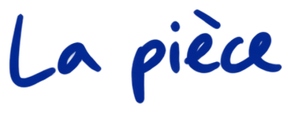

Teaser
Une première entrée dans l’univers de Los lunares del Puma.
1 min 25 s · Sous-titres en françaisTélécharger depuis Drive · 13 MB ↗
Danse · son · répétition performative
Que se passe-t-il quand le zapateado flamenco se déploie à partir de l’horizontalité et de l’inversion ?
Hip-hop · flamenco · danse contemporaine · Performance
Poursuivre la lecture ↓
Los lunares del Puma naît de l’écoute : Adrián Vega prête attention à son propre son, explore ses cadences et reconnaît dans son corps un patrimoine interculturel né du croisement entre le hip-hop et le folklore.
La pièce prend pour axe le zapateado flamenco, travaillé comme une matière rythmique et poétique qui se fond dans la corporalité du breaking et s’étend aux textures de la danse contemporaine. Le zapateado se déploie à l’horizontale, dans la chute et dans l’inversion. Depuis ce territoire, la pièce esquisse une réponse à la question de la part de flamenco qui habite le corps de Vega et de la manière d’approcher cette tradition sans tomber dans le stéréotype.
Dans cette friction bienveillante apparaissent des résidus, des marques et des empreintes qui façonnent une présence scénique singulière : le Puma. Une figure qui nomme la différence et propose une manière de se situer lorsque la réponse n’est pas « je suis flamenco », mais « je suis un Puma ».
Les lunares sont l’habitat de cette figure. Ce sont aussi des taches. Ils peuvent aussi être des fenêtres depuis lesquelles regarder, activer et reproduire des mémoires du mouvement. Rythme, mesure et pulsation composent un paysage sonore et visuel qui révèle l’empreinte du geste et l’intensité de sa vibration.
Avec cette pièce, Adrián Vega propose une expérience intime et viscérale dans le cadre de sa recherche sur les danses d’aller-retour : une rencontre entre la mémoire du corps et la vibration du présent.


Un espace pour écouter.
Los lunares del Puma propose une expérience voyeuriste où n’importe quel espace peut devenir la salle de répétition de l’artiste. La mesure et le rythme sont les éléments les plus marquants de la pièce, qui explore également le corps humain et ses textures à partir de la sonorité de l’espace dans lequel il évolue.
Aujourd’hui, être streamer est courant, notre relation aux caméras fait partie du quotidien et partager nos activités et nos processus est devenu une habitude. Adrián Vega s’appuie sur l’accessibilité des outils numériques pour explorer le format du blog vidéo performatif, où le virtuel et la présence physique convergent afin de stimuler la curiosité et d’approfondir l’idée du processus créatif comme résultat artistique en soi.

«Los lunares del Puma naît du processus de m’écouter moi-même, de prêter attention à mon son, de comprendre l’interculturalité et le patrimoine corporel et sonore que j’ai généré grâce à ma rencontre avec la danse. Les lunares sont un habitat, une fenêtre par laquelle regarder. Le puma est mon adolescence : accéder aux codes du Hip Hop et les comprendre. Il est aussi ma post-adolescence, qui m’offre une perspective contemporaine depuis laquelle je peux observer, cohabiter et laisser le puma regarder et entrer en relation avec les flamencos.»Adrián Vega
Une première entrée dans l’univers de Los lunares del Puma.
1 min 25 s · Sous-titres en françaisTélécharger depuis Drive · 13 MB ↗Version in situ de Los lunares del Puma.
26 min 39 s · Sous-titres en françaisTélécharger depuis Drive · 214 MB ↗Captation de la pièce à Escena Xixón.
43 min 51 s · Sous-titres en françaisTélécharger depuis Drive · 281 MB ↗Un espace de transmission : partager la recherche corporelle de la pièce à travers un workshop.
Workshop · Transmission · 1 min 33 sLos lunares del Puma se prolonge à travers des ateliers, une installation et une publication qui ouvrent le processus de création à d’autres personnes. Le corps, le son et l’image deviennent des outils pour expérimenter ensemble, partager des questions et construire d’autres façons de regarder et d’écouter.

Qu’est-ce qui nous pousse à produire et à consommer des images ? Un atelier pour explorer notre rapport aux caméras, à la photographie et à la vidéo à partir de l’expérience du corps. Chaque personne peut se reconnaître comme productrice et réceptrice d’images, et éprouver comment le mouvement change lorsqu’il s’adresse à une caméra ou au regard des autres.
Son parcours comprend le programme éducatif MOU-TE de Dansa Metropolitana et l’atelier à L’Artesà, au Prat (18 mars 2022). En 2023, il a eu lieu à La Caldera (10 mars, 3 h), à l’Institut Pedralbes (13 mars, 2 h) et au FIS — Festival Internacional de Solos, à Póvoa de Varzim (22 novembre, 4 h).
L’atelier à La Caldera ↗
Quel est le son de la danse ? Une pratique qui relie l’ouïe, le toucher et le mouvement pour explorer la sonorité du corps et du lieu que nous habitons. L’écoute ouvre un espace d’improvisation, d’échange et de composition sonore.
Atelier réalisé à La Caldera le 23 mars 2023, de 17 h à 18 h 30, dans le cadre de Dansa Metropolitana. Une proposition ouverte à toutes et à tous.
La pratique à La Caldera ↗
Documents, vidéos et activités ouvrent des fenêtres sur le processus de création de Los lunares del Puma. L’installation permet d’entrer dans ses matériaux, ses relations et ses questions, en reliant l’expérience en présence à la dimension virtuelle de la recherche.
Installation présentée à La Caldera les 17, 18, 23 et 24 mars 2023, dans le cadre de Dansa Metropolitana.
Découvrir l’installation ↗
Un journal qui rassemble des pensées, des images et des références du processus. La recherche prend la forme d’une publication pour partager ce qui accompagne la pièce et offrir une autre façon d’approcher son univers, avant ou après la rencontre scénique.
Publié par La Caldera / Lo Otro en 2023.
Découvrir la publication ↗

Cette façon de partager le processus traverse aussi la création avec les élèves de 1.º de ESO de l’Institut Maria Espinalt, première année de l’enseignement secondaire espagnol, avec la médiation du Mercat de les Flors–Graner et l’accompagnement de l’enseignante Marta Gimbert.
Titre provisoire s’est construit comme un vidéoblog scénique à partir de la motivation, de l’univers créatif et de la voix du groupe. L’improvisation et les créations audiovisuelles personnelles côtoyaient des questions sur la danse, la musique, TikTok et la K-pop. L’œuvre écoutait le processus et évoluait avec lui.
Lire le récit du processus ↗Les formats peuvent être adaptés à l’âge, aux centres d’intérêt et au contexte de chaque groupe.
Parlons d’une proposition pour votre lieu ↗Un solo qui peut habiter différents espaces.

Je m’appelle Adrián Vega. Je suis chorégraphe diplômé de l’Institut del Teatre et professeur invité au conservatoire professionnel de danse de Barcelone. Je me considère comme un artiste post-Hip Hop ; mes intérêts et ma pratique chorégraphiques reposent sur l’hybridation, la spéculation sur les langages du mouvement et le travail au sol.
Grâce à mon lien avec le flamenco et la musique, je m’intéresse actuellement tout particulièrement à la sonorité du corps et à son utilisation dans la danse et la création contemporaine. En 2013, je me suis plongé dans les arts de la scène en tant que cofondateur du collectif Iron Skulls Co, où nous avons exploré les relations entre danses urbaines, danse contemporaine et théâtralité, développant une démarche que nous appelons « theatrical breakin’ ». Mes propositions ont été sélectionnées dans plusieurs festivals internationaux, notamment Breakin’ Convention à Londres, Summer Dance Forever à Amsterdam, Summer Stage à New York et Hip Hop International à San Francisco.
Avec Marina Pravkina au sein de la plateforme Jazzbetween, et avec Juan Carlos Llérida dans Postablao et Doce, j’ai travaillé au laboratoire de recherche empirique du flamenco : un regard sur le flamenco à travers l’expérience, qui contribue à élargir notre compréhension du folklore.
Les événements de 2020 ont changé ma vision artistique et j’ai commencé à explorer des thèmes autobiographiques, le flamenco inversé et le post-Hip Hop. Dans ma première pièce, « We are just okey », l’idée de tomber m’a amené à travailler le zapateado depuis l’inversion et dans un silence total, afin de comprendre le son de l’impact à partir de la chute. C’est là qu’est né mon intérêt pour la performativité, le quotidien et l’esthétique brutaliste. Ma deuxième création est une coproduction entre l’ICUB et le Mercat de les Flors dans le cadre du programme de résidence. Intitulée « Título provisional », elle se concentre sur la motivation intrinsèque de la préadolescence dans un blog vidéo performatif.
En 2022, je suis devenu résident à La Caldera, où j’ai trouvé une grande liberté poétique. Tout mon travail antérieur m’a nourri pour réaliser « Los lunares del Puma », un projet dans lequel je crée un long solo, une installation et deux ateliers centrés sur le processus créatif plutôt que sur le résultat, et où je peux parler de ma relation aux caméras, de la sonorité du corps et de l’appropriation culturelle.
ContactDes regards qui accompagnent la pièce et sa recherche.
Adrián raconte la naissance de Los lunares del Puma et la rencontre du hip hop, du flamenco et du zapateado à l’horizontale.
Le Festival Essencia présente la pièce et une recherche autour du sol, de l’inversion et du son.
Flamenco invertido à Espai LaGranja : un atelier pour transmettre une recherche entre danses urbaines et flamenco.
Un reportage sur Espai LaGranja qui cite le workshop Flamenco invertido parmi ses activités. Page 4.
Los lunares del Puma figure au programme de Dansa Metropolitana 2023 à La Caldera.
La présentation de Los lunares del Puma à Cué, Llanes, dans le cadre du cycle R.A.R.U R.A.R.A.